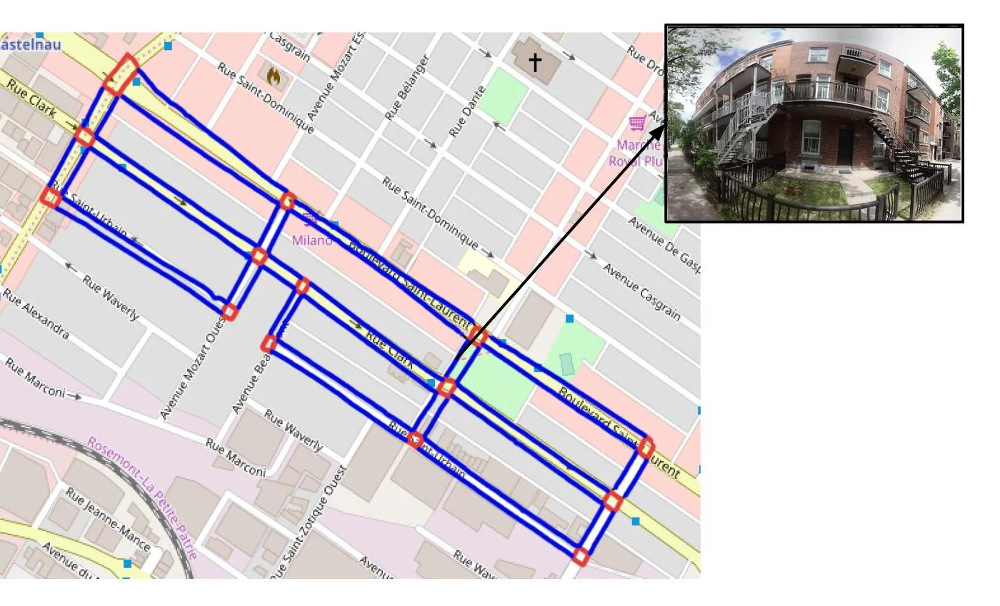
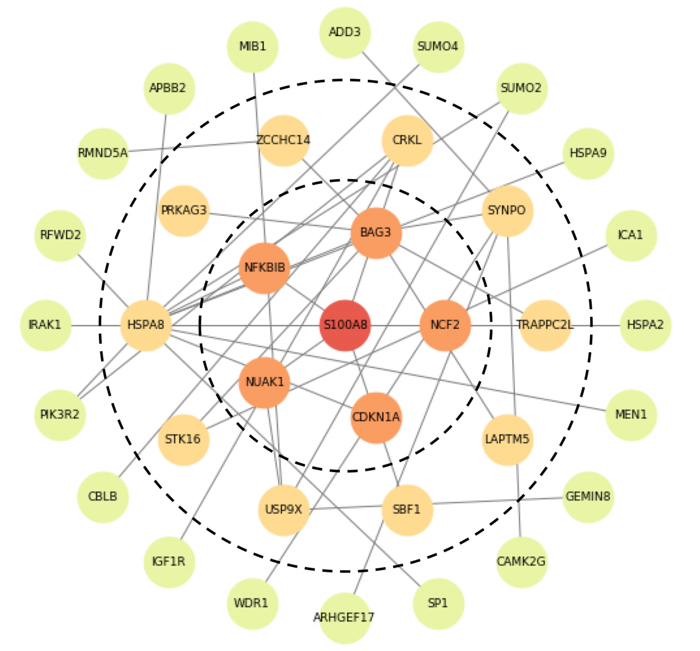

Research & Publications
I am currently pursuing a PhD at Polytechnique Montreal under the supervision of Chris Pal at Mila - Quebec AI Institute. In general, I'm interested in understanding the nature of intelligence, and developing intelligent systems for the benefit of humanity. My interests include artificial and biological systems (I used to work at the Montreal Neurological Institute), but these days I focus mostly on artificial neural networks. Below, you can see a few of the lines of research I've worked on and the relevant publications. For a complete list of my publications, check out my Google Scholar.
NAVI - Assistive technology for the blind

In this project, we are developing a Navigational Assistant for the Visually Impaired (NAVI). Our is to assist the blind and visually impaired with getting around unmapped urban environments (e.g. apartment complexes) and performing precision navigation (finding a specific door). The long-term goal is to deploy NAVI to mobile devices and enable vision-based pedestrian navigation to target addresses with no internet connection required.
Gene Graph Convolutions

Recent advances in next generation sequencing technology are reducing the cost of acquiring gene expression data. This enables improved treatment and clinical outcomes for cancer patients. We are using graph convolutional neural networks and gene-gene interaction graphs to make better predictions in this low-data regime.
COVI - A risk prediction app against Covid-19
In April 2020, in the midst of the Covid pandemic, I joined Yoshua Bengio in working to develop a contact tracing application for deployment in partnership with the federal and provincial governments. The result of which was COVI, a research project which resulted in the development of an AI-enabled health mobile application to empower citizens in their fight against the COVID-19 virus. I was a lead author of several of the academic works describing that system, linked below.
Made in Canada, the app was created to help citizens make better informed decisions about their actions to reduce risk, while preserving individual privacy. The COVI app draws on epidemiology, behavioral psychology and artificial intelligence to propose an innovative approach to contact tracing mobile technology.
The design and development phase of the project has been finalized. Our codes and models are available in open source for academic consumption and accessible to states should they wish to deploy an AI-enable health app inspired by our approach.